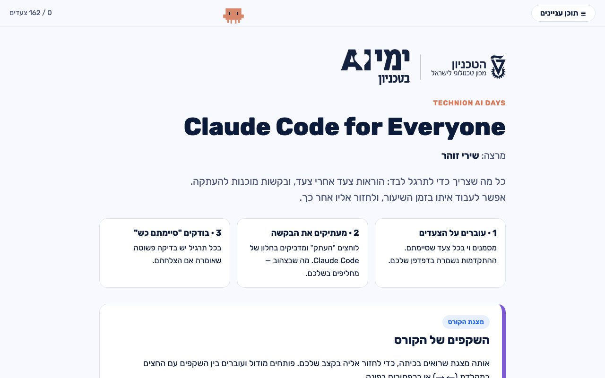

שירי זוהר · AI Corporate Apps Lead, monday.com
מובילה את תחום אפליקציות ה-AI הארגוניות ב-monday.com. משתמשת ב-Claude Code כל יום — לא רק לקוד.
מחקר, ניתוח נתונים, מצגות, אוטומציות של משימות חוזרות.
שתצאו מפה עם ידע, כלים ובסיס טוב ופרקטי שתוכלו להמשיך ולבנות איתו כל מה שתרצו.
מה זה סוכן, ו-Claude Code שרץ על המחשב שלכם.
לעצב איך Claude מתנהג בין שיחות.
לחבר את Claude לכלים שלכם ולרשת.
לכוון את הסוכן שיבנה דברים שעובדים.
להפוך את העבודה לניידת ולדעת מה הלאה.
דף אחד עם המצגת והקישורים. כדאי לפתוח אותו בטלפון ולהשאיר פתוח לאורך השיעור.

בין הבלוקים: הפסקה של 5 דקות.
נדרש מנוי Claude Pro ומעלה — Claude Code לא זמין בחשבון החינמי.
אתם תדעו לייצר לעצמכם סוכנים שעובדים בשבילכם.
מה שמחברים או מכניסים ל-Claude כדאי לבדוק מול הארגון שבו אתם עובדים. יש סיכונים בעבודה עם מודלי שפה, ונדבר על זה בהמשך. לא בטוחים? בודקים קודם עם אבטחת המידע בארגון.